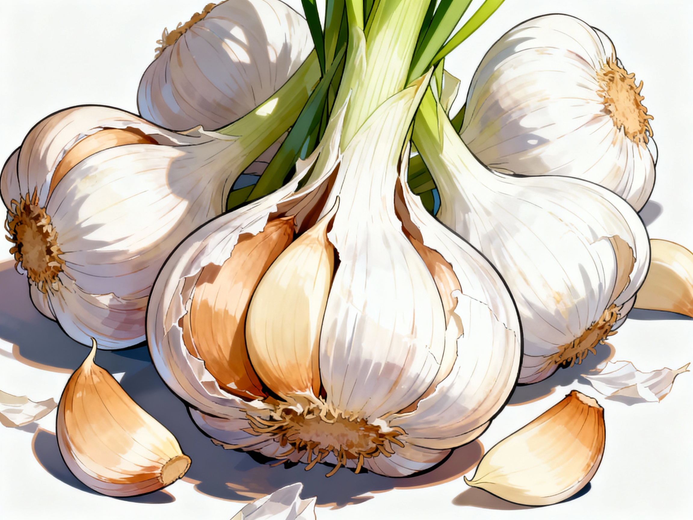

Garlic: Small Cloves with Strong Flavor
Garlic is a common kitchen ingredient that brings a rich, savory flavor to vegetables, sauces, meats, and stir-fries. A small clove can change the whole taste of a dish, which is why many gardeners like to grow garlic along the edges of garden beds.
Garlic provides small amounts of vitamin C, vitamin B6, and manganese, and it contains sulfur compounds that give it its strong smell and taste. When cooked gently with oil and vegetables, garlic can help deepen flavor without needing as much salt.
In many traditions, people use warm garlic dishes or garlic-infused broths as simple home remedies when they feel under the weather. These practices are meant as comfort foods only and should not be seen as a treatment or cure for illness.
Garlic nutrition and traditional use information is summarized from USDA FoodData Central and educational articles from health organizations that discuss garlic as part of a balanced diet.